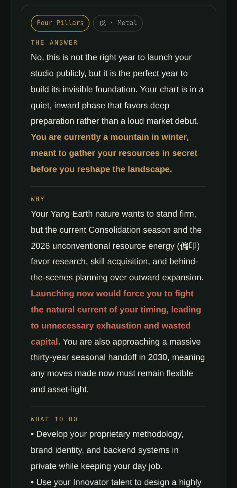
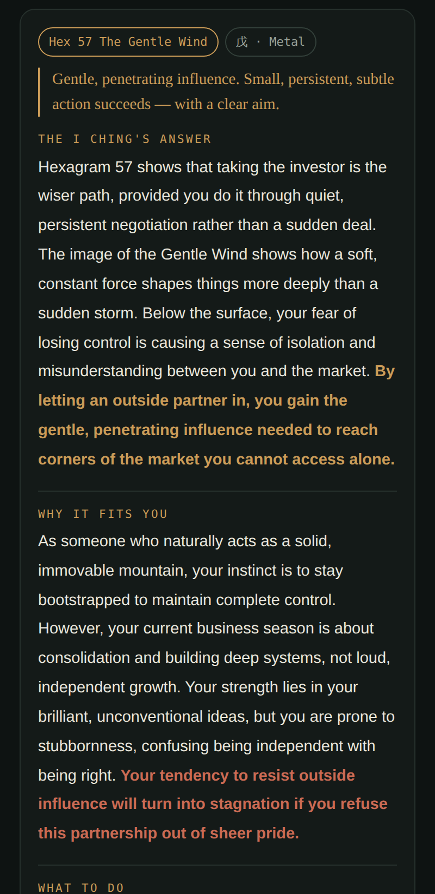

Combining the ancient wisdom of the I Ching and Four Pillars with modern coaching. Every reading — and every morning's email — is computed from your own chart alone: an original result, made for you and no one else. Business first, with health, love, training and money beside it. Computed, not guessed.
Not a horoscope site, and not an app of vague comfort. Numinous reads your own chart with two of humanity's oldest living systems — the I Ching, handed down for 3,000 years, and Four Pillars, a craft refined for over a thousand. Both are famously deep and famously difficult; Numinous delivers them in clear, modern English, computed personally for you.
Know yourself. Time your moves. Decide well. Morning after morning, decision after decision — Numinous walks with you.
Before the day begins, a short note reaches you — read from your own chart and the tone of the day, and written for no one else. What the day favors, what to hold back on, the one move that fits it. Ours to write; yours to keep — free, for as long as you like.
Not a broadcast horoscope. Each morning's note is drawn from your Four Pillars chart and the day's own energy — a piece of counsel addressed to you by name.
The trial ends; the morning letter doesn't. Cancel and it still arrives every day. A daily habit of self-knowledge, on the house — no card needed to keep it.
A thousand-year method, put to work as a coach would: know yourself, time your moves, decide well. Something to steady the day, not to spook it.
Arrives once, at 5 a.m. your time. No feed, no notifications, nothing to check. Unsubscribe in one tap, any morning.
Both what you read in the app and the email that reaches you each morning are generated from your own chart — your exact birth data, your ten-year cycles, and this single day. Three millennia of Eastern wisdom, computed into a one-of-a-kind result written for you and no one else. Nothing here is a one-size-fits-all horoscope.
Bring any worry, any decision. Numinous analyzes your own data and answers from it — and you can ask as many times as you need, turning the question over from every angle until the way forward is obvious. A private advisor that always remembers your chart, on call whenever the question keeps you up at night.
One tells you who you are and the seasons you move through. The other reads this exact moment, this decision. Numinous is the first tool to run both — and then weave them into one clear message. Systems this old survive for one reason: they work.
From the exact year, month, day and hour of your birth, Numinous computes your chart: your core nature, your strengths and blind spots, your ten-year chapters, and the days that run with you or against you. Refined for over a thousand years to time life's biggest decisions — and still what working professionals use today.
Hold a real question, cast, and the moment answers with one of 64 hexagrams — read the full classical way: the changing lines, the nuclear, the inverted and the opposite. Handed down for 3,000 years — famously deep, famously difficult — and delivered to you in plain modern English.
Your Four Pillars chart — strengths, blind spots, the work that fits you, and the seasons ahead.
Bring any question, as often as you need a clear head — even the ones you hesitate to say out loud. Answered from your own data, fully explained, every time.
Both systems woven into one heartfelt message, with the key points made plain.
Your strong days to move and quiet days to hold back — and a private advisor that remembers your chart.
Watch a real session — the chart computed from a birth moment, a live question to the I Ching, and the answer with the key line and caution marked in color.


Numinous wasn't built by a data company. It was built by one person who spent years learning Four Pillars and the I Ching — a fascinating craft that is famously hard to master. What once took a practitioner hours by hand, Numinous now computes in seconds and gets right every time: your full chart, your ten-year cycles, and true solar time corrected for any city on earth. A lifetime's method, made reliable and instant — and put to work on your business, your health, and the real decisions of your life.
Four Pillars and the I Ching are a fascinating world — uncannily accurate, and genuinely fun — but their real value is practical: knowing yourself, timing your moves, and deciding well in work and in life. I spent the years so you don't have to. My hope is simple — to put this in your hands in a form you can use every day, and to walk alongside you. — MizukiNico
Your chart, cycles and daily scores are calculated deterministically from your birth data — the same values a professional would work out by hand.
Give your birth city and your hour is corrected to the sun's real position — the professional standard most apps skip.
Every I Ching cast computes the changing lines, nuclear, inverted and opposite — the complete method, delivered in plain English.
Reflection and timing for business and everything beside it — never fortune-telling, never medical, legal or financial advice.
Everyone keeps the morning letter, free, for good. Pro adds the full app — ask anything anytime, the deep readings, and the complete daily calendar.
A professional consultation runs $150–300 a session. Numinous is a few dollars a month, every day.
Enter your birthday, and see your chart in seconds. From there, Numinous runs alongside your life — every morning, every decision.
Open Numinous